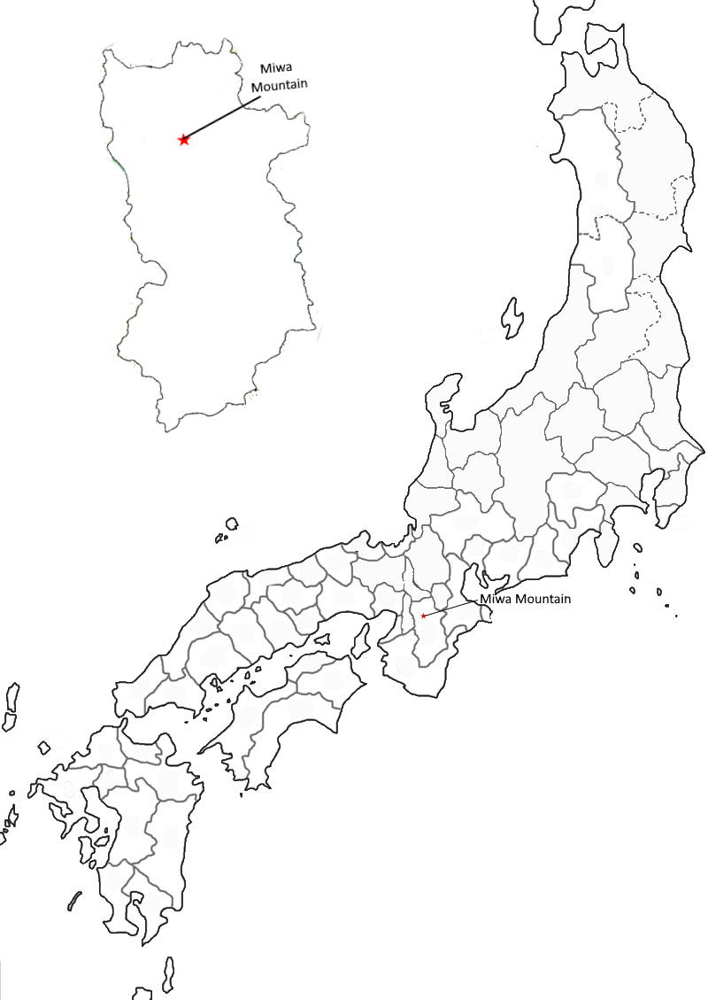

Poem #94 
みわ山をしかもかくすか春霞人にしられぬ花やさくらむ
miwayamao
shika mo kakusu ka
harugasumi
hito ni shirarenu
hana ya sakuramu
shika mo kakusu ka
harugasumi
hito ni shirarenu
hana ya sakuramu
Observe how the haze
of spring spreads its gauzy mantle
on Miwa Mountain:
might flowers be blooming there
of which men have no knowledge?
of spring spreads its gauzy mantle
on Miwa Mountain:
might flowers be blooming there
of which men have no knowledge?

Background Information
Mount Miwa has a long history of deities, thought to have started as early as the Kofun period (third century -538). This area has a deep history, with early ruler’s tombs and a historic Shinto shrine (Andreeva). For more information, read Andreeva’s “The Karmic Origins of the Great Bright Miwa Deity: A Transformation of the Sacred Mountain in Premodern Japan.”
In 1207, a retired emperor started a project with sliding door paintings: 46 utamakura were picked, with each utamakura being assigned a special feature and season. 4 painters were hired and 10 poets were assigned to do one poem on each of the placenames. The best poem would be painted onto the screen door. 7/10 poems included the cedar that Mt. Miwa was associated with, but 10/10 poems included a cuckoo. This project involved adding new associations to utamakura; Mt. Miwa had never been associated with a season before, but the addition of a cuckoo attempted to associate Mt. Miwa with early summer (Kaori).
In addition to being associated with cedar, it is also associated with pine trees (McCullough).
In 1207, a retired emperor started a project with sliding door paintings: 46 utamakura were picked, with each utamakura being assigned a special feature and season. 4 painters were hired and 10 poets were assigned to do one poem on each of the placenames. The best poem would be painted onto the screen door. 7/10 poems included the cedar that Mt. Miwa was associated with, but 10/10 poems included a cuckoo. This project involved adding new associations to utamakura; Mt. Miwa had never been associated with a season before, but the addition of a cuckoo attempted to associate Mt. Miwa with early summer (Kaori).
In addition to being associated with cedar, it is also associated with pine trees (McCullough).